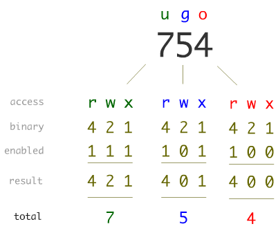

echo "Hello World !"
xxxxxxxxxxpwd
x# current dircd .
# go to parent dircd ..
# go 2 level upcd ../..
xxxxxxxxxxmkdir dirName
xxxxxxxxxxrmdir dirName
-l for long listing format with permissions-r will sow file created in reverse order-t unix time creation-h will show the file in gf or mb-a will show all hidden filesxxxxxxxxxxls -lrt
# show all the files with mp3 or mp4 extensionls -lrt *.{mp3,mp4}
# show all the files that have 'employee' in its namels -lrt *employee*
xxxxxxxxxxtouch fileName
xxxxxxxxxxrm fileName
# remove file after confirmation (y/n)rm -i fileName
xxxxxxxxxxcp file1 file2
# copy multiple files to dircp file1.txt file2.txt file3.txt dir
# copy files after confirmation for each (y/n)cp -i file1.txt file2.txt file3.txt dir
xxxxxxxxxx# rename filemv file1 file2
# move filemv file1 dir
ugo = user, group, other
a = all (user, group and other)
rwx = read, write, execute

xxxxxxxxxx# add execute permission to allchmod ugo +xchmod a +x
# modifying permissions with octal valueschmod 754
# remove all permissionschmod 0
xxxxxxxxxx# to show content of the filecat file
# get input from terminal and store in file (overwrite data)cat > file
# get input from terminal and store in file (append data)cat >> file
# copy two files into new filecat file1 file2 > file3
-n number of linesxxxxxxxxxx# show first 10 lines of filehead -10 file
-n number of linesxxxxxxxxxx# show last 10 lines of filetail -10 file
# show all lines starting from 11 to endtail +11 emp.txt
xxxxxxxxxx# show last 10 commands ranhistory 10
xxxxxxxxxx# show count of lines, words and char in filewc file
# show count of lineswc -l file
# show count of wordswc -w file
# show count of charwc -c emp.txt
xxxxxxxxxx# will replace a->x, b->y and c->zecho "Jeet Dhanesha" | tr [abc][xyz]
# will replace all letters with a except e"Jeet Dhanesha" | tr -c e a
# will check for continuous space and remove second space"Jeet Dhanesha" | tr -s ' '
-c count of each line-dprint all duplicate lines-f skip first n lines in comparison-u print all unique linesto use uniq all lines need to be sorted
xxxxxxxxxx# print all unique lines of fileuniq -u file
cut -d ',' -f1 file1 for delimiterjoin
xxxxxxxxxx# cut 1-3 columncut -c 1-3 file
# cut 3 to last columncut -c 3-
xxxxxxxxxxjoin file1 file2
used to sort file or any field in a file
-k to specify fiel number which you want to sort-t to specify delimiter-r to sort in descending orderxxxxxxxxxx# to sort the enter filesort file
# to sort the file in reverse ordersort -r file
# to sort file based on 2nd fieldsort -t '|' -k 2 file
# to sort in reverse ordersort -t '|' -k 2 -r file
# to sort a file based on different columns of field# column means individual charsort -t '|' -k 8.7,8.8 file
# to sort data numerically# by default it will sort on basis of first digitsort -n file
# will remove duplicate, show and copy data to other filesort -u emp.txt|tee file1.txt
used to manipulate data when Column specific data
Syntax: awk option 'selection_criteria {action}' filename
xxxxxxxxxx# to print all linesawk '{print}' emp.txt
# to print 2nd, 3rd and 6th Fieldawk -F "|" '{print $2,$3,$6}' emp.txt
# print 3rd line to 10th line awk -F "|" 'NR==3,NR==10{print $2,$3,$6}' emp.txt
# print only those records who are having 8 columnsawk -F "|" 'NF==8{print}' emp.txt > goodfile.txt
# print only those records who are having more than 8 columnsawk -F "|" 'NF>8{print}' emp.txt > badfile.txt
# pattern matching# print all those where designation is HR# designation is 3rd field in fileawk -F "|" '$3~/HR/{print}' emp.txt
# print all the rows where salary > 10,000awk -F "|" '$6>10000{print}' emp.txt
# change delimiter in output fileawk -F "|" '{OFS="," } {print $1, $2, $3}' emp.txt
# advantage with awk command...# it can handle multi char delimiterawk -F '[|~|]' {print}' emp.txt
used to edit any file
used to print something from file
used to find and replace something from file
Syntax: sed option 'address action' filename
xxxxxxxxxx# to print the first 10 lines of the filesed -n '1,10p' emp.txt
# to print different range of line from 1 to 5, 11 to 13 etc# -e used as 'and' operatorsed -e '1,5p' -e '11,13p' emp.txt
# to print something on the basis of patternsed -n '/director/p' emp.txt
# find and replace something in file# replace all the director with HRsed 's/director/HR/g' emp.txt
# to replace only second occurence of direcor with HRsed 's/director/HR/2' emp.txt
# find and replace first 10 linessed '1,10s/director/HR/g' emp.txt
# find and replace something with case insensitivitysed '1,10s/director/HR/i' emp.txt
# find and replace and redirect the output to a filesed 's/director/HR/g' emp.txt > HR.txt
# find and replace in the original filesed -i 's/director/HR/g' emp.txt
# find and replace in original file by taking backup# backup file name: emp.txt.backupsed -i.backup 's/director/HR/g' emp.txt
# delete something with some pattern# delete all the file with directorsed /director/d' emp.txt
# to print everything except a particular patternsed -n 'director/!p' emp.txt
used to search fro particular pattern, or to search for a string in a particular file
Syntax: grep options 'string' filename
xxxxxxxxxx# search for given string in a particular filegrep 'hr' emp.txt
# search for given string as a word in a particular filegrep -w 'HR' emp.txt
# to remove case sensitivitygrep -iw 'HR' emp.txt
# redirect output to a specific filegrep -iw 'HR' emp.txt > HR.txt
# also print line numbergrep -iwn 'HR' emp.txt
# print all the lines that do not match the patterngrep -vw 'HR' emp.txt
# search pattern in all directories & subdirectories with recursive opriongrep -irw 'HR' *
# search in directorygrep -iwr 'HR' /home/datasets/*
# search with regular expression at position# ^ - beginning of the line# $ - at end of line# .* - search for any chargrep -iwr 'man.*' emp.txt
xxxxxxxxxxecho "Hello World !" > file.txt
-eq: is equal to-ne: is not equal to-gt: is greater than-ge: is greater than or equal to-lt: is less than-le: is less than or equal to
xxxxxxxxxxcount=10if [ $count -eq 10 ]then echo "the condition is true"fi
Method - 1
xxxxxxxxxxcount=10if [ $count -ne 10 ]then echo "the condition is true"else echo "the condition is false"fiMethod - 2
xxxxxxxxxxcount=10if (( $count > 10 ))then echo "the condition is true"else echo "the condition is false"fi
xxxxxxxxxxcount=10if (( $count > 10 ))then echo "the condition is true"elif (( $count <=9 ))then echo "Statement 2"else echo "the condition is false"fi
AND: -a, &&OR: -o, ||NOT: !Method - 1
xxxxxxxxxxage=10
if [ "$age" -gt 18 ] && [ "$age" -lt 40 ]then echo "Age is correct"else echo "Age is not correct"fiMethod - 2
xxxxxxxxxxage=10
if [[ "$age" -gt 18 && "$age" -lt 40 ]]then echo "Age is correct"else echo "Age is not correct"fiMethod - 3
xxxxxxxxxxage=10
if [ "$age" -gt 18 -a "$age" -lt 40 ]then echo "Age is correct"else echo "Age is not correct"fi
xxxxxxxxxxnum=1while [ $num -le 10 ]do echo "$num" num=$(( num+1 ))done
loop run until condition is false
xxxxxxxxxxnum=1until [ $num -gt 10 ]do echo "$num" num=$(( num+1 ))done
xxxxxxxxxxfor i in 1 2 3 4 5do echo "$i"doneMethod - 1
xxxxxxxxxx# {0..20} if increment is of 1# {start..ending..increment}for i in {0..20..2}do echo "$i"doneMethod - 2
xxxxxxxxxxfor (( i=0; i<5; i++))do echo "$i"done
xxxxxxxxxxfor (( i=0; i<5; i++))do if [ $i -gt 2] then break fi echo "$i"donexxxxxxxxxxfor (( i=0; i<5; i++))do if [ $i -gt 2] then continue fi echo "$i"done
xxxxxxxxxx#./helloScript.sh BMW Mercedes Toyotaecho "$1 $2 $3"
# $0 will print script name as wellecho "$0 $1 $2 $3"
# means unlimited number of inputsargs=("$@")
# args[0] will be the first argument passedecho ${args[0]} ${args[1]} ${args[2]}
# will print out all the argumentsecho $@
# will print total number of arguments passedecho $#
xxxxxxxxxxwhile read linedo echo "$line"done < "${1:-/dev/stdin}"
xxxxxxxxxx
# standard output to file1# error output to file2ls -al 1>file1.txt 2>file2.txt
# here std output is stored in file and error is shown in terminalls -al >file.txt
# both std output and error is stored in filels -al >file.txt 2>&1ls -al >& file.txt
xxxxxxxxxxMESSAGE = "Hello World!"export MESSAGE./secondScript.shIn secondScript.sh...
echo "The message is : $MESSAGE"
xxxxxxxxxxecho "Enter 1st string"read st1
echo "Enter 2nd string"read st2
if [ "$st1" \< "$st2" ]then echo "$st1 is smaller than $st2"elif [ "$st1" \> "$st2" ]then echo "$st1 is bigger than $st2"else echo "both strings are equal"fi
concat = $st1$st2echo $concat
# Lowercaseecho ${st1^}
# Uppercaseecho ${st1^^}
xxxxxxxxxxn1=20n2=4
echo $(( n1 + n2))echo $(( n1 - n2))echo $(( n1 * n2))echo $(( n1 / n2))echo $(( n1 % n2))
echo $(expr $n1 + $n2 )echo $(expr $n1 - $n2 )echo $(expr $n1 \* $n2 )echo $(expr $n1 / $n2 )echo $(expr $n1 % $n2 )
xxxxxxxxxxecho "Enter Hex Number..."read Hex
echo -n "The Deciamal Value of $Hex is : "echo "obase=10; ibase=16; $Hex" | bc
xxxxxxxxxxcar=('BMW', 'Toyota', 'Honda')
# prints all the elements of arrayecho "${car[@]}"
echo "${car[0]}"
# prints all the indexes of the elements echo "${!car[@]}"
# prints the length of the arrayecho "${#car[@]}"
# removes the element at index 2unset car[2]
car[2]='Mercedes'
xxxxxxxxxxfunction sayHi(){ echo "Hello Everyone !!!"}
sayHi()
xxxxxxxxxxfunction sayHi(){ echo "Hello $1"}
sayHi Jeet
xxxxxxxxxxfunction funcCheck(){ returningValue="I love linux"}
returningValue="I love Mac"echo $returningValue
funcCheckecho $returningValue